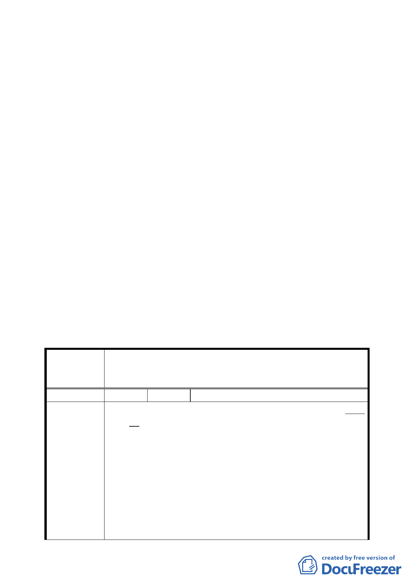

一、本案係市府 95 年 5 月 3 日以府都規字第 09578184200 號函
送到會。並自 95 年 5 月 4 日起公開展覽 30 天。
二、法令依據：都市計畫法第 27 條第 1 項第 3 款
三、申請單位：臺北市政府
四、計畫範圍：詳計畫圖所示
五、變更理由及內容：詳計畫書
六、公民或團體所提意見：1 件
七、本案經提 95 年 7 月 18 日本會第 557 次委員會議，決議如下：
本案因涉及工程技術性及安全性問題，請申請單位台電公司
再與新工處進一步協調，俟有具體結果再提會報告，過程請
發展局一併參與。
八、本案發展局以 95 年 10 月 4 日北市都綜字第 09577730300 號
函提送修正資料到會。
決議：
一、 照案通過。
二、 公民或團體所提意見決議詳附件綜理表。
臺北市都市計畫委員會公民或團體所提意見綜理表
變更臺北市文山區頭廷段二小段部分 219、243 地號、頭廷段
案 名 三小段部分 257、332 地號暨政大段二小段部分 8、316 地號
等保護區土地為電力設施用地計畫案
編號
陳情理由
１ 陳情人 棲霞山莊管理委員會
一、旨掲頭廷段二、三小段地號土地，依貴府委請學者張石
角教授對本市山坡地之研究調查報告係屬“平均坡度均
大於百分之五十五以上，屬高度環境敏感之山坡地，具
高度潛在地質災害，應禁止一切開發行為”，本案台電
原規劃路線＃16 塔位，於 89 年間施作時即確實發生嚴
重之土石崩塌，如今台電擬更改路線至更陡峭之山稜線
附近施作深基礎開挖之 RC 塔座基礎，難保不會再造成公
共災害。
二、貴府都市發展局主要業務在於創造美好之都市環境，但
綜觀木柵區，無論在市區或鄰近之山坡地區，到處聳立
著高壓鐵塔及高壓電線，將都市景觀破壞殆盡，危害都
三